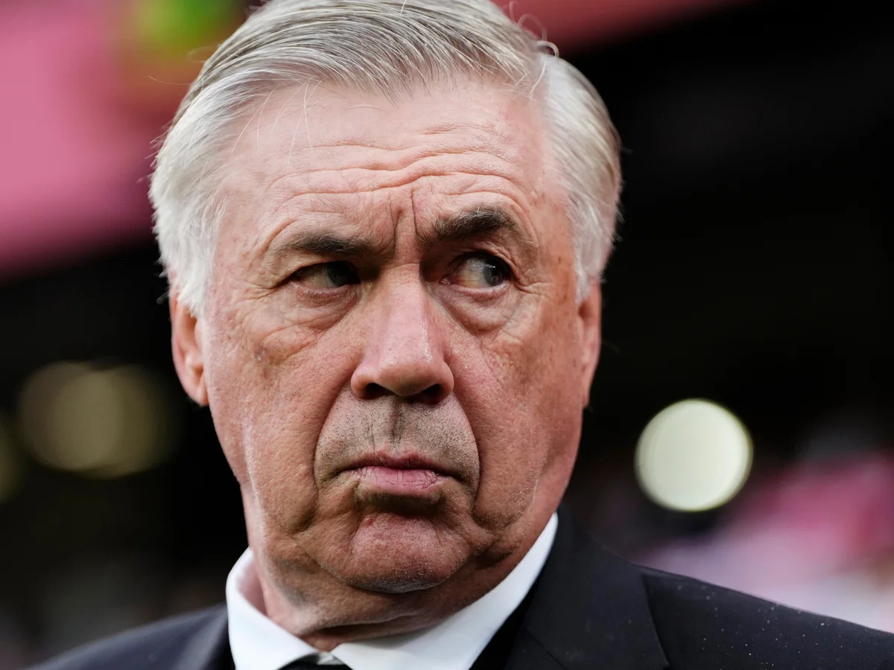
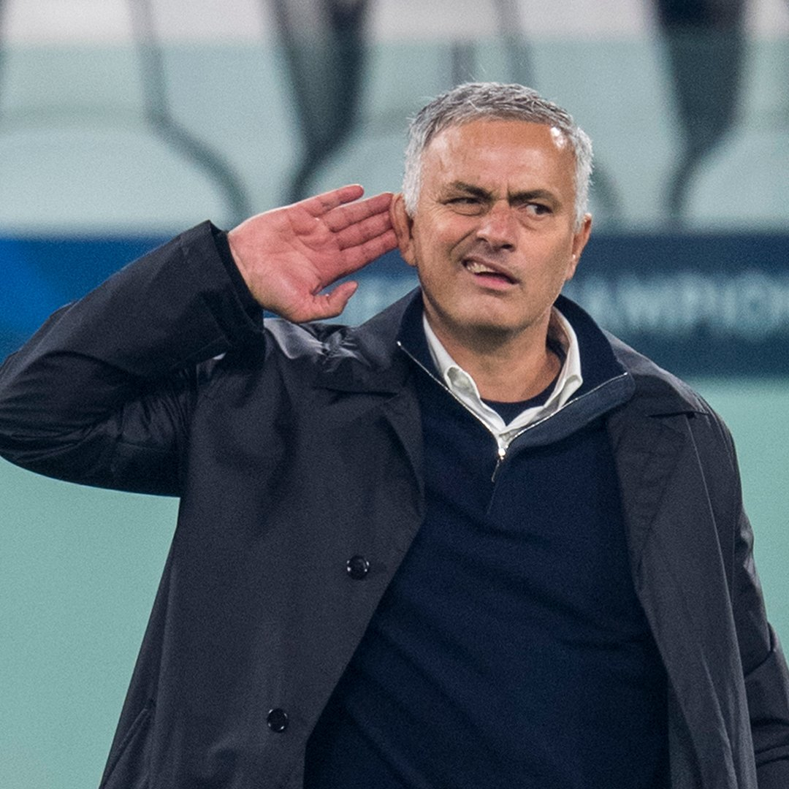

Information Regarding Managers
Top Present-Day Managers
 At this moment, there are vast bundle of world class managers performing at the highest level with their clubs. A number of managers that meet this requirement are Ruben Amorim, Carlo Ancelotti, Gian Piero Gasperini, Luis Enrique, and Xabi Alonso. These managers are not only succeeding at their respected clubs, but thriving, with their teams playing beautiful yet effective soccer that both intertains fans while also winning.
Finest Managers in History
 In the world of soccer, it is typically the club and its players who receive the majority of the credit for their achievements. Fans and media focus on the players' performances and the team's successes, often overlooking the critical role of the manager. The manager is the one who dictates the team's tactics, strategy, and overall direction, playing a key role in their success. Despite this immense responsibility, the manager often receives the least recognition, even though his efforts are essential to the team's accomplishments. In many ways, the manager does the most yet gets the least acknowledgment. Some of the greatest managers in history include Sir Alex Ferguson, Jose Mourinho, Arsene Wenger, Johan Cruyff, and Sir Max Busby. These managers achieved the greatest of success with their respective clubs and achieved glory on numeorus occasions.
Managerial Records
 The manager plays a crucial role in a team's success and in soccer as a whole, shaping tactics, strategy, and team dynamics. As a result, there are numerous records that highlight the best managers, recognizing their exceptional achievements and impact on the sport. Some of the best and most unique records include Sir Alex Ferugson's record of triumph, with his record of 48 titles, Jimmy Davies record of the longest managerial reign, with an imposing 50 years, and finally Carlo Ancelotti's records of both winning the most champions leagues as a manager, 5 titles, and being the first to win a league title in each of the top 5 leagues.
The manager plays a crucial role in a team's success and in soccer as a whole, shaping tactics, strategy, and team dynamics. As a result, there are numerous records that highlight the best managers, recognizing their exceptional achievements and impact on the sport. Some of the best and most unique records include Sir Alex Ferugson's record of triumph, with his record of 48 titles, Jimmy Davies record of the longest managerial reign, with an imposing 50 years, and finally Carlo Ancelotti's records of both winning the most champions leagues as a manager, 5 titles, and being the first to win a league title in each of the top 5 leagues.